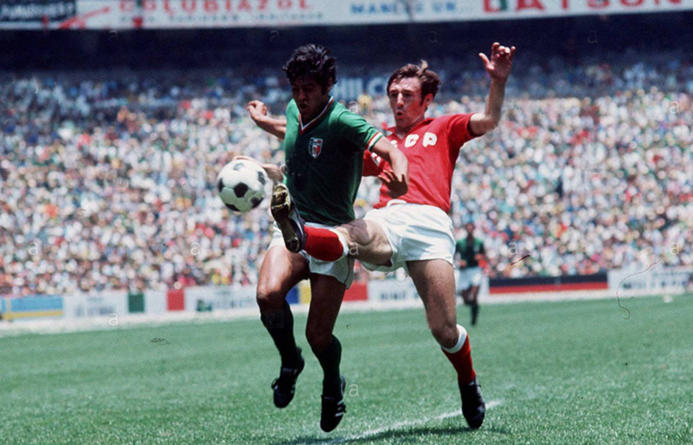

9.ª edición
Jules Rimet
El Mundial más bonito
Copa Mundial de la FIFA México 1970
31 de mayo – 21 de junio de 1970
País sede: México 🇲🇽
16 selecciones
32 partidos
Datos generales del torneo
- País sede: México 🇲🇽
- Ciudades sede: Ciudad de México, Guadalajara, León, Puebla, Toluca
- Estadios: 5 recintos (incluyendo el Estadio Azteca)
- Selecciones participantes: 16
- Partidos jugados: 32
- Goles anotados: 95
- Campeón: Brasil 🇧🇷
- Subcampeón: Italia 🇮🇹
- Tercer lugar: Alemania Federal 🇩🇪
- Cuarto lugar: Uruguay 🇺🇾
- Máximo goleador: Gerd Müller (10 goles)
- Mejor jugador: Pelé 🇧🇷
- Mejor partido: Italia 4–3 Alemania (semifinal)
Jugadas y momentos destacados
Pelé, Jairzinho, Tostão, Gérson y Rivellino brillaron en la que muchos consideran la selección más grande de la historia.
Además, el torneo dejó momentos inmortales como la “Atajada del Siglo” de Banks a Pelé y la “Batalla de Guadalajara”.

Resumen del torneo
-
México 1970 fue el primer Mundial transmitido a color y es considerado por muchos como
el mejor Mundial de la historia.
-
Brasil presentó una selección legendaria con Pelé como líder, conquistando su tercer título
y quedándose definitivamente con la Copa Jules Rimet.
-
Gerd Müller brilló como un goleador imparable, marcando 10 goles para Alemania Federal.
-
La semifinal Italia 4–3 Alemania es recordada como el “Partido del Siglo”.
-
La final consagró a Brasil con un 4–1 contundente sobre Italia en el Estadio Azteca.
Fase final (últimos 4)
Semifinales
- 🇧🇷 Brasil 3–1 Uruguay 🇺🇾
- 🇮🇹 Italia 4–3 Alemania Federal 🇩🇪
Partido del Siglo
Tercer lugar
- 🇩🇪 Alemania Federal 1–0 Uruguay 🇺🇾
Final
Selecciones participantes por grupo
Grupo A
- 🇲🇽 México
- 🇷🇺 Unión Soviética
- 🇧🇪 Bélgica
- 🇸🇻 El Salvador
Grupo B
- 🇮🇹 Italia
- 🇺🇾 Uruguay
- 🇸🇪 Suecia
- 🇮🇱 Israel
Grupo C
- 🇧🇷 Brasil
- 🇬🇧 Inglaterra
- 🇷🇴 Rumania
- 🇨🇿 Checoslovaquia
Grupo D
- 🇩🇪 Alemania Federal
- 🇵🇪 Perú
- 🇲🇦 Marruecos
- 🇧🇬 Bulgaria
Final: Brasil vs Italia
La final se disputó el 21 de junio de 1970 en el Estadio Azteca, donde Brasil venció 4–1 a Italia
con una exhibición histórica, coronando a Pelé en su último Mundial.
Brasil 🇧🇷 – Alineación titular
- DT: Mário Zagallo
- Félix (POR)
- Carlos Alberto (C)
- Britto
- Piazza
- Everaldo
- Clodoaldo
- Gérson
- Rivellino
- Jairzinho
- Tostão
- Pelé
Italia 🇮🇹 – Alineación titular
- DT: Ferruccio Valcareggi
- Albertosi (POR)
- Burgnich
- Facchetti (C)
- Cera
- Rosato
- Bertini
- Mazzola
- Riva
- Boninsegna
- Domenghini
- De Sisti
Reseña general
México 1970 es recordado por la calidad técnica de los equipos, el juego ofensivo,
el espíritu limpio del torneo y la consagración de Pelé como una leyenda absoluta.
Fue también el primer Mundial transmitido a color, lo que contribuyó a su enorme impacto global.
Brasil ganó su tercer título y fue ampliamente aclamado como uno de los mejores equipos de todos los tiempos.